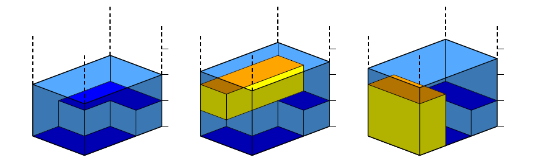

BZPRO
#3972. [WF2013]Pirate Chest
内存限制：256 MiB
时间限制：30 Sec
提交
提交记录
讨论
题目描述
海盗Dick受够了在公海上厮杀、抢劫、盗窃了，这把生活弄得一塌糊涂。所以他决定隐退，而且他已经找到了一座理想的小岛，只要钱没花完就能在那儿安度余生。他现在有很多金币，他想要把这些金币存在一个宝箱里（毕竟他还是个海盗）。Dick可以建造一个边长都是正整数的长方体宝箱，宝箱底面的长宽不能超过某个特定的尺寸，不过宝箱的高度可以是任意正整数。现在他需要找一个地方把宝箱藏起来。在探索小岛的过程中，他找到了一个好地方。
Dick打算通过把宝箱淹没在一个黑暗的池塘里来藏宝箱。池塘的表面是矩形的，它完全填满了一个山谷的底部，四周都是竖直的悬崖。Dick调查了这个池塘，他在池塘表面建立了平面直角坐标系的网格，并测得了每个单位方格的深度。当宝箱沉入水中时，它会一直下沉直到碰到池底。沉底时，宝箱的顶面会和池塘的表面平行，宝箱的边缘会和网格对齐。宝箱排开了一部分水，这会使池塘的水位上升（即使被宝箱排开的水没有空隙上升也会这样）。四周的悬崖足够高，所以水不会溅出来。当然，由于宝箱不能被别人看到，宝箱的顶面必须严格低于水面。你的任务就是求出Dick能藏下的宝箱的最大体积。
在下图中，左边的图表示池塘的形态，中间的图表示一种体积为3的放置方法，右边的图表示一种体积为4的放置方法。这也是能够藏下的最大体积。注意，如果右边的图的宝箱再变高1单位，它的顶面就能被看到了，因为此时它的顶面和水面一样高。
输入格式
第一行包含四个整数a, b, m, n，表示池塘表面的大小是m*n，宝箱底面一边尺寸不能超过a，另一边的尺寸不能超过b。另外，a和b满足底面为a*b的宝箱不能覆盖整个池塘。
接下来m行，每行n个整数di,j表示方格(i, j)的深度。
输出格式
第一行包含一个整数，表示能完全淹没在池塘里的满足要求的宝箱的最大体积。如果不存在能淹没在池塘里的宝箱，输出0。
样例
样例输入
3 1 2 3
2 1 1
2 2 1
样例输出
4
数据范围与提示
1≤a, b, m, n≤500，0≤di,j≤10^9。